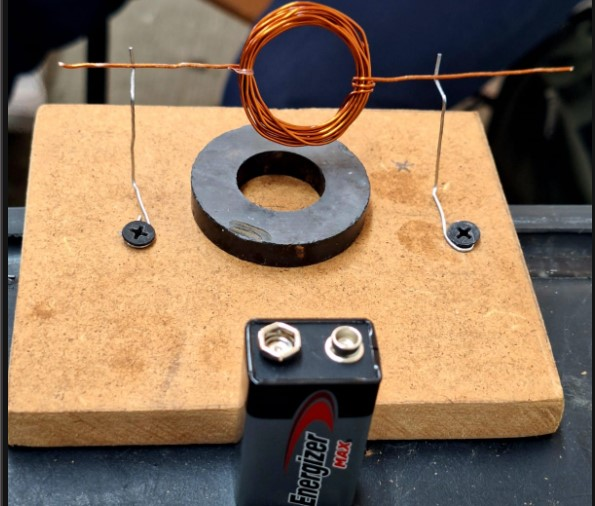
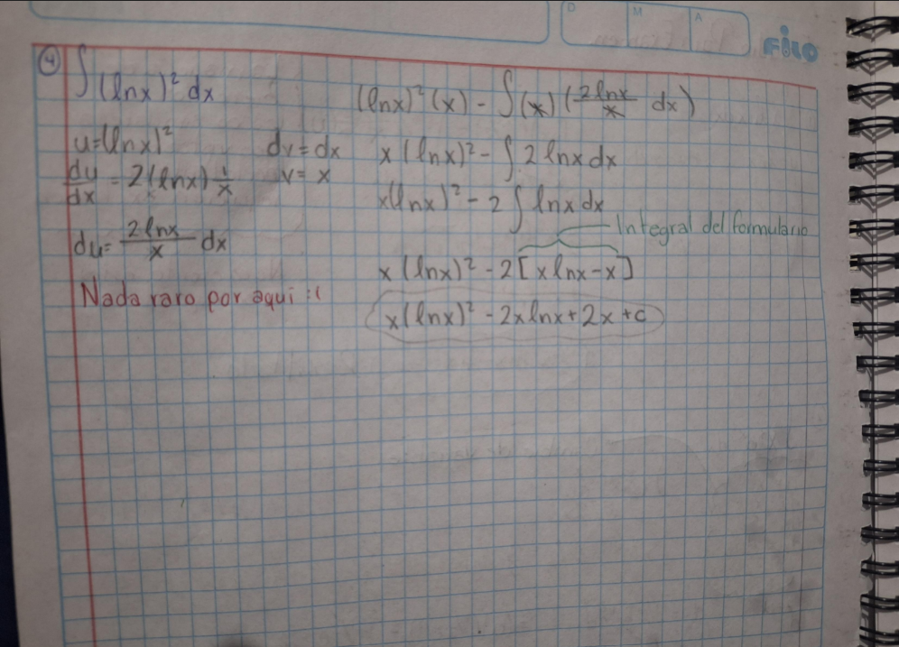
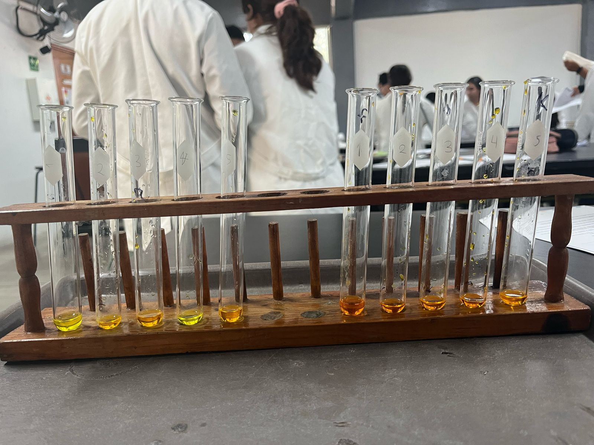

Físicos-Matemáticos

Explora los conceptos clave y proyectos de nuestra especialidad
Explora los conceptos clave y proyectos de nuestra especialidad
Es una especialidad enfocada en el desarrollo del pensamiento lógico, matemático y la comprensión de las leyes físicas que rigen el universo.
|  |  |  |